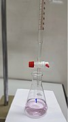

titration

Definition: Titration (also known as titrimetry and volumetric analysis) is a common laboratory method of quantitative chemical analysis to determine the concentration of an identified analyte (a substance to be analyzed). A reagent, termed the titrant or titrator, is prepared as a standard solution of known concentration and volume. The titrant reacts with a solution of analyte (which may also be termed the titrand) to determine the analyte's concentration. The volume of titrant that reacted with the analyte is termed the titration volume.
Source: Wikipedia
Wikipedia Page (Something wrong with this association? Let us know.)
Wikidata Page (Something wrong with this association? Let us know.)